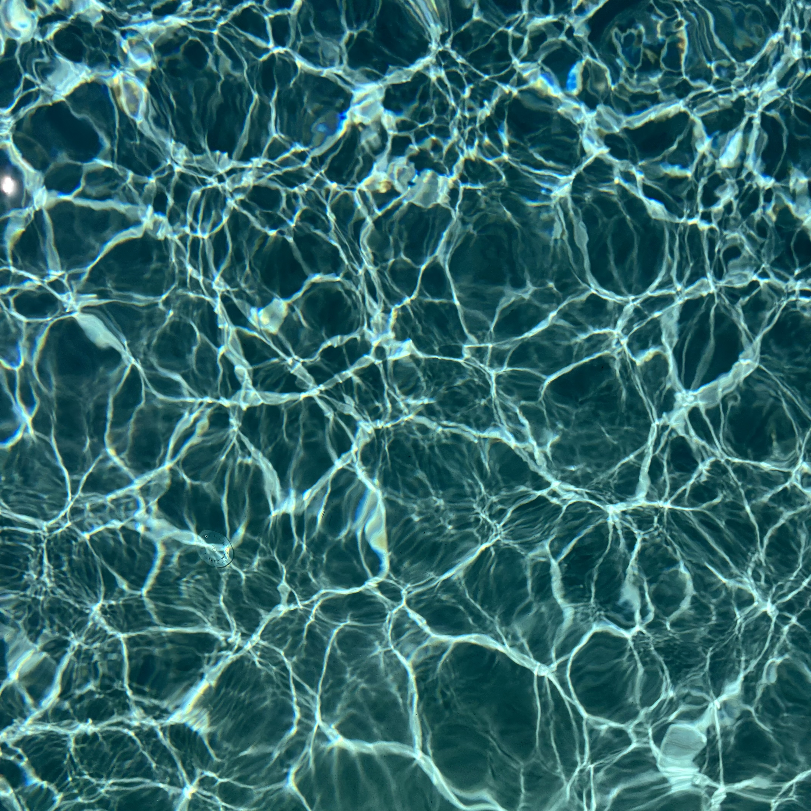
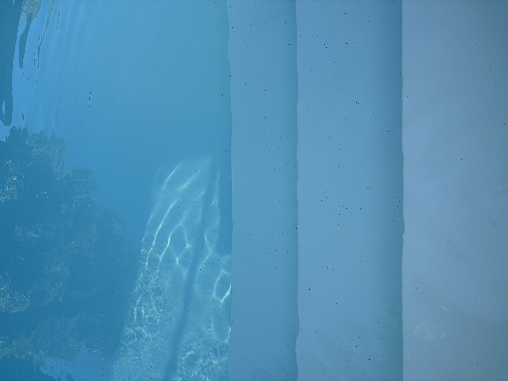
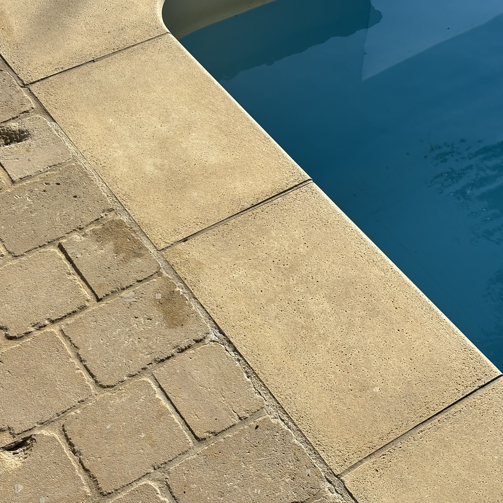
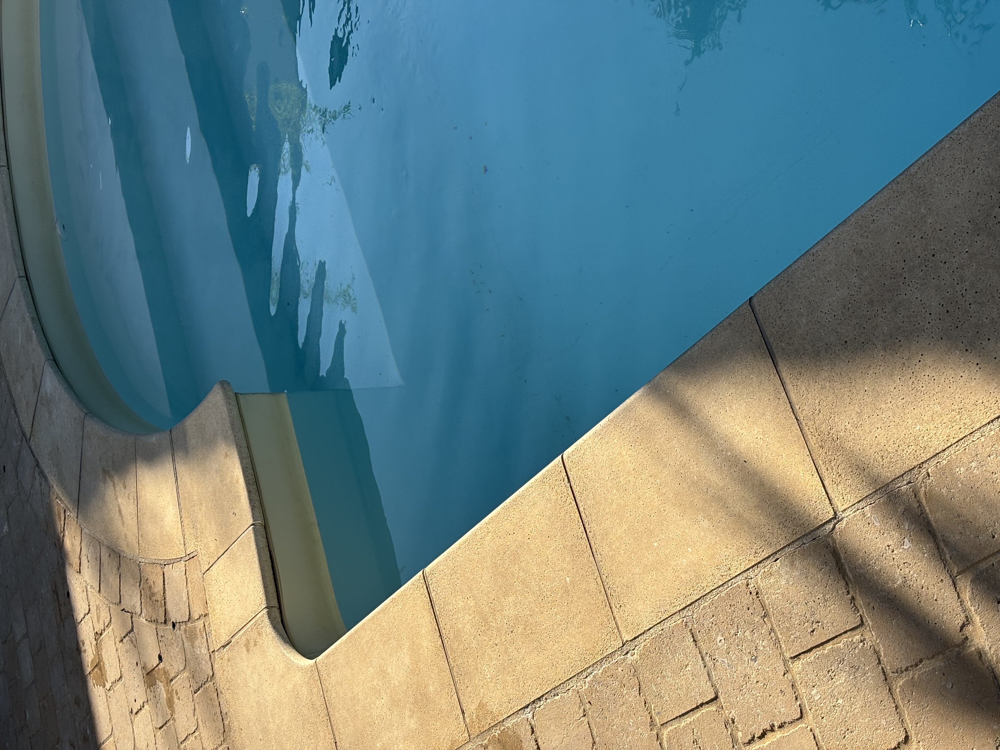
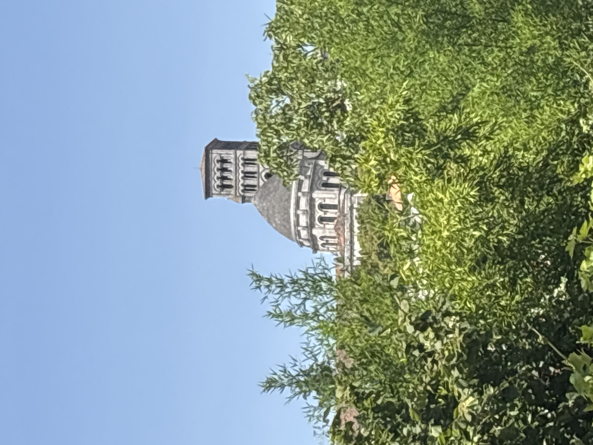
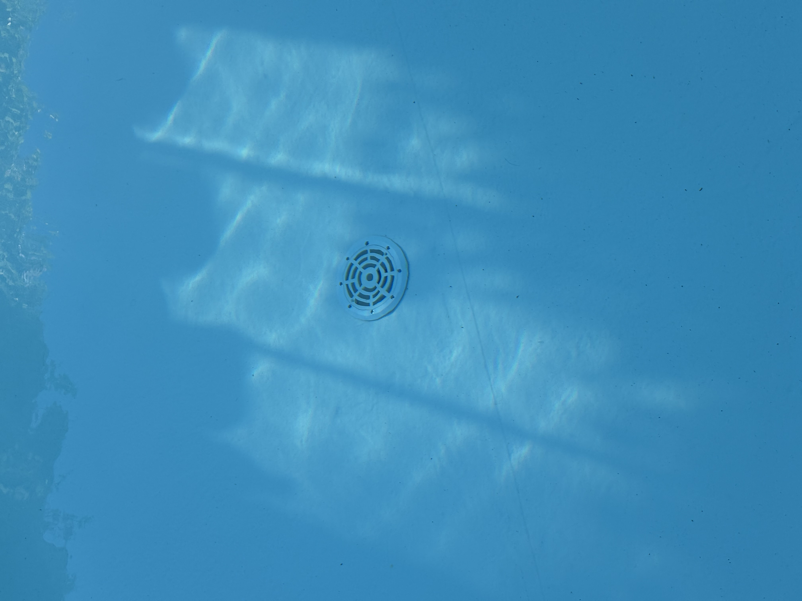
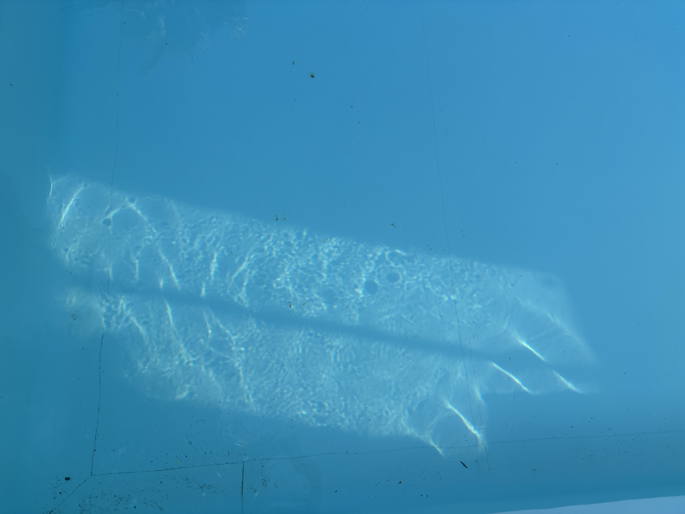
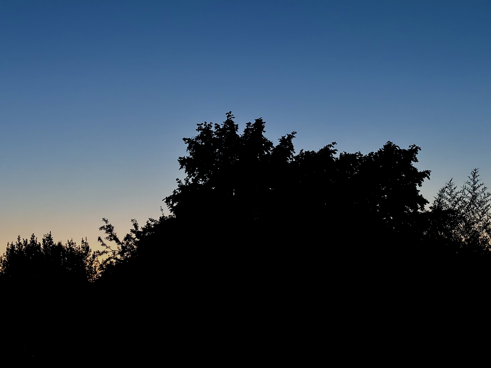
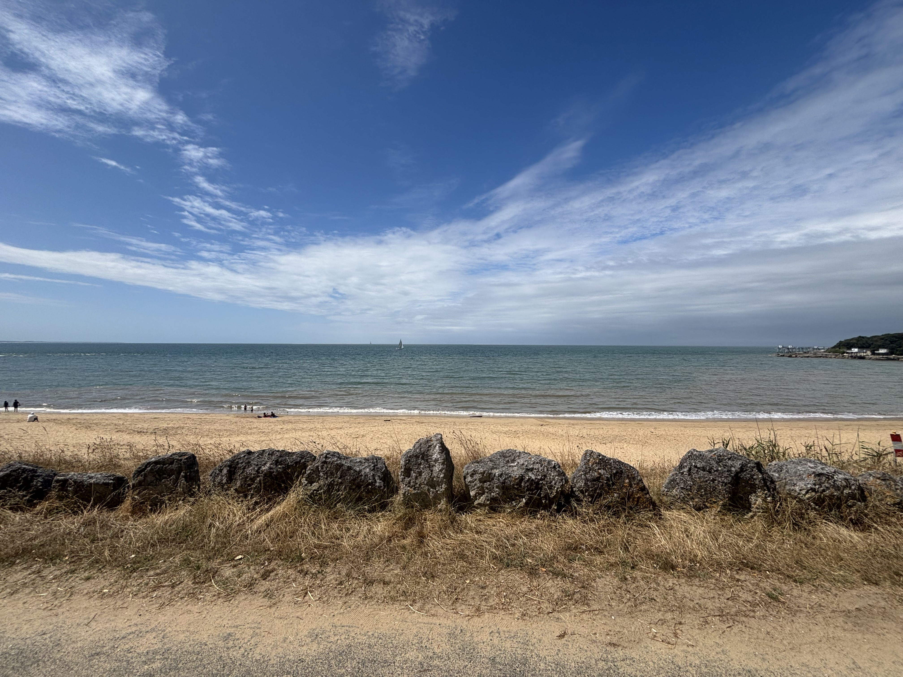
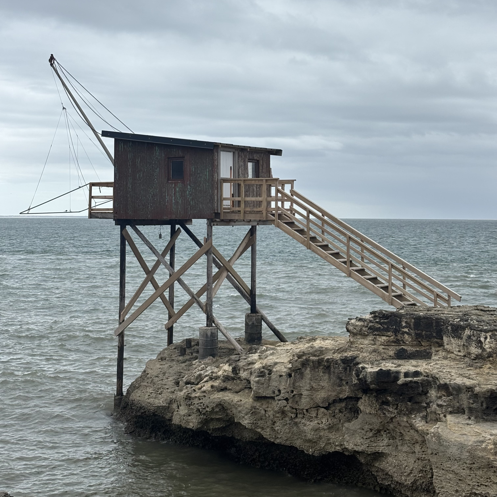

We float above the cool blue surface of our lives across which light is shaped — reflected — refracted. Distant waves travel through us in their infinite arc across the universe

reflecting refracting · alive!

pool surface

the edge of the pool

light in the pool and contrasts with the stone

splashes · sun · music from a site radio

energy gathers in the heat round the pool

whirls and eddies collecting vegetation and debris
the pool warms in the sun — distant fusion taken in by clear water


emersion in the pool · submerging in the still water

night awaits the blue hour

we submerge ourselves in the dark water

nancy and the pool · the pool and the ball
the light playing in the pool


a slower day — slow flow of conversations and children playing

as the pool brings cool at last
the pool cover retreating
from the pool the heat subsides · the pool awaits
the healing power of water · ripples · flowing across the skin
cleanliness of the pool · neither land nor sea
the pool retreats and sets itself aside — hides to wait once more for sun